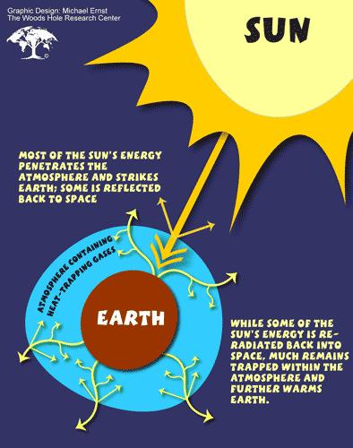

Réchauffement climatique – 1ère partie
De nos jours, la plus part de gens voient l’effet de serre comme la cause des changements climatiques globaux. Selon la communauté scientifique mondiale, les gaz à effet de serre, principalement le dioxyde de carbone (CO2) rejeté dans l’atmosphère par la combustion des carbones fossiles, sont responsables du réchauffement climatique. Mais peu de personnes savent que l’effet de serre n’a pas commencé avec la révolution industrielle. Il y a un consensus dans le milieu scientifique pour dire que l’activité humaine n’est pas à l’origine de l’effet de serre mais que ça a toujours été un processus naturel.
Environ 1/3 de l’énergie solaire qui atteint les couches supérieures de l’atmosphère terrestre est réfléchie vers l’espace. Le reste chauffe la surface de la Terre qui émet alors un rayonnement infrarouge vers l’atmosphère. Les gaz formant l’atmosphère comme le dioxyde de carbone, le méthane et le protoxyde d’azote ont la propriété d’absorber une partie de ces rayons infrarouges, ce qui cause l’effet de serre (Figure 1).

Figure 1: L’effet de serre
Le phénomène a été nommé ainsi à cause du processus analogue impliquant les murs en verre d’une serre. Sans l’effet de serre, la température moyenne de la Terre serait d’environ -18°C. C’est grâce à l’effet de serre que la température moyenne de la Terre est maintenue à environ 15°C. On peut donc dire que l’effet de serre est un processus physique qui donne à la Terre une température moyenne permettant l’apparition et le maintient de la vie.
L’effet de serre fonctionne de la même manière que les vitres d’une voiture un jour d’été (Figure 2). Elles permettent au Soleil de chauffer l’intérieur de la voiture mais empêchent la chaleur de s’échapper. C’est pour cette raison que l’intérieur de la voiture est bien plus chaud que l’extérieur.
Figure 2: La métaphore de la voiture
Les activités humaines, principalement la combustion de carbone fossile et la déforestation, ont modifié le cycle du carbone et fortement augmenter l’effet de serre, causant le réchauffement climatique. Depuis que la combustion de carbone fossile pendant la révolution industrielle a augmenté la vitesse à laquelle le dioxyde de carbone et d’autres gaz à effet de serre s’accumulent dans l’atmosphère (Figure 3), le taux de radiations infrarouges capturées par ces gaz à effet de serre a également augmenté, ce qui conduit à une augmentation globale de la température moyenne de la Terre (Figure 4). Vous avez probablement déjà entendu parler de la fonte des calottes polaires qui risquent d’augmenter le niveau des océans. D’autres conséquences pourraient être des changements dans les phénomènes climatiques, ce qui modifierait la productivité agricole. Les scientifiques affirment que même une faible hausse des températures peut avoir des conséquences négatives pour l’environnement. Certains ont montré que si la température moyenne de la terre augmente de plus de 2°C, les écosystèmes du monde entier subiront des dommages irréversibles.

Figure 3: Concentration atmosphérique en dioxide de carbone
Figure 4: Température globale moyenne
Le niveau du réchauffement climatique dépend de plusieurs mécanismes de rétroaction. Par exemple, quand l’atmosphère se réchauffe, la concentration en vapeur d’eau augmente, ce qui intensifie l’effet de serre. En réaction, le réchauffement est plus important ce qui aboutit à une augmentation de l’évaporation de l’eau. Ce cycle de rétroactions positives peut doubler l’augmentation de l’effet de serre par rapport à la seule augmentation du taux de CO2.
Très souvent, les gens confondent l’effet de serre avec le trou dans la couche d’ozone. Ce sont pourtant bien deux phénomènes différents. En dépit du fait que l’ozone (O3) et les chlorofluorocarbones (CFCs) soient des gaz à effet de serre, l’effet de serre et le trou dans la couche d’ozone sont distincts. L’ozone dans les couches supérieures de l’atmosphère absorbe les rayons ultraviolets les plus dangereux de la lumière du Soleil. Les chlorofluorocarbones détruisent les molécules d’ozone et rendent la couche d’ozone de plus en plus fine. Des accords internationaux obligent les nations à réduire cette destruction chimique de l’ozone pour laisser finalement la couche se refaire. Les scientifiques suivent l’évolution du « trou » de la couche d’ozone au-dessus de l’antarctique (Figure 5), là où la couche est la plus fine.

Figure 5:
Le trou de la couche d’ozone au-dessus de l’antarctique. Le “trou” de la couche d’ozone est une région où la concentration en ozone dans la stratosphère est exceptionnellement faible au-dessus de l’Antarctique. On peut l’observer au printemps, entre Août et Octobre dans l’hémisphère sud. Une concentration inférieure à 220 Unités Dobson (DU) est considérée comme un « trou » (délimité sur la figure 5 par le trait blanc ; http://ozonewatch.gsfc.nasa.gov/facts/hole.html). Une unité Dobson, d’après le scientifique G.M.B. Dobson, est la méthode standard de mesure dans les études sur l’ozone. Si tout l’ozone au-dessus d’une certaine surface était compressé à 0°C sous une pression de 1 atmosphère et de nouveau réparti uniformément au-dessus de cette surface, cela formerait une
couche de 3mm d’épaisseur, correspondant à 300 unités Dobson (DU)
(http://jwocky.gsfc.nasa.gov/dobson.html).